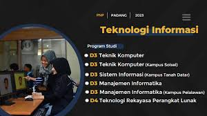

Selamat Datang

Jurusan Teknologi Informasi menghasilkan tenaga profesional di bidang teknologi informasi, khususnya dalam pengelolaan sistem berbasis komputer yang mampu beradaptasi di berbagai sektor industri modern.
Fasilitas yang tersedia meliputi ruang kelas ber-AC, laboratorium komputer dengan spesifikasi tinggi, serta lingkungan belajar yang nyaman dan kondusif.
| No | Program Studi | Jenjang | Akreditasi |
|---|---|---|---|
| 1 | Teknik Komputer | D3 | Baik Sekali |
| 2 | Manajemen Informatika | D3 | Unggul |
| 3 | Teknologi Rekayasa perangkat lunak | D4 | Baik Sekali |